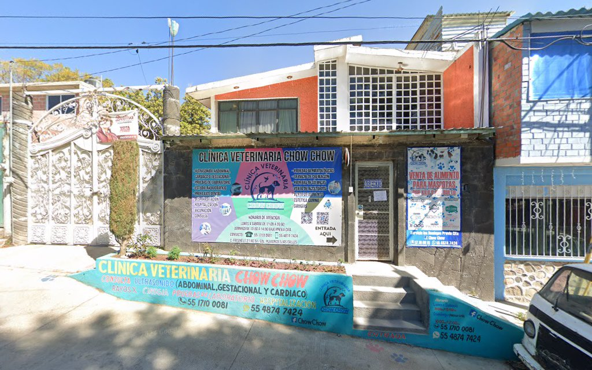

Nuestra Clínica y Servicios
Instalaciones y Atención Veterinaria
Ubicados en Col. Plutarco Elías Calles, equipados para cuidar la salud y tranquilidad de tu mascota.
Fotografía Real • Clínica
Clínica Veterinaria Chow Chow
Atención médica enfocada en perros y gatos en Ixtapaluca.

Ubicación • Ixtapaluca
Acceso en Col. Plutarco Elías Calles
Fresno Manzana 51 Lote 21, C.P. 56585, Ixtapaluca.

Diagnóstico Avanzado
Ultrasonido y Rayos X
Estudios abdominales, cardíacos, gestacionales y radiográficos.

Cuidado Integral
Estética, Alimento y Accesorios
Higiene profesional y nutrición de calidad para tu mascota.